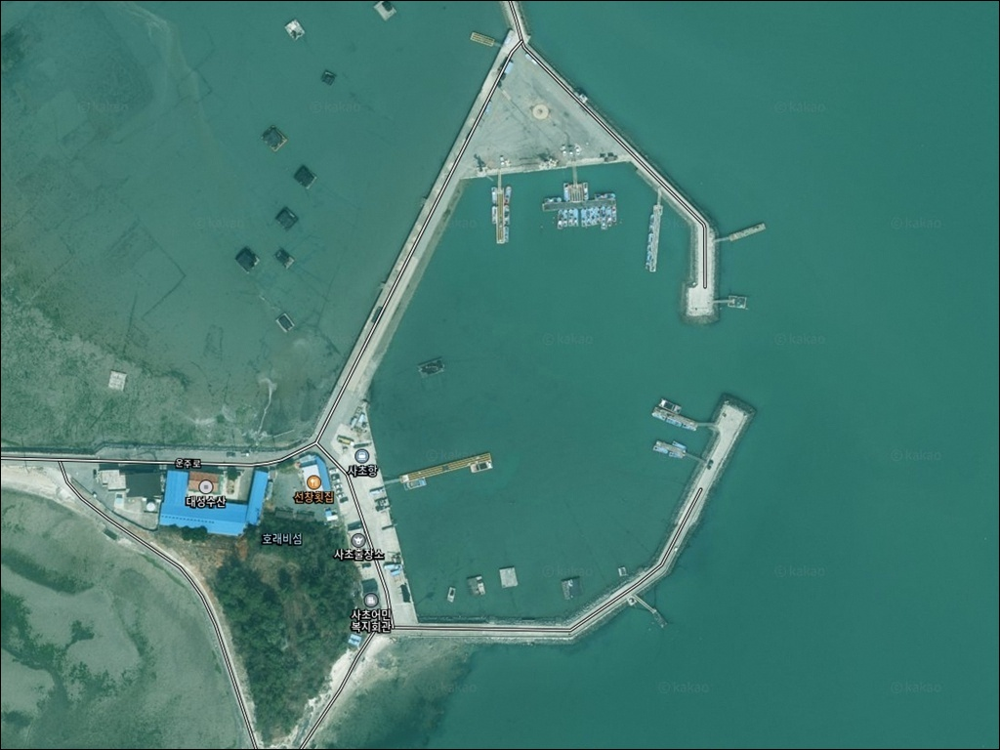
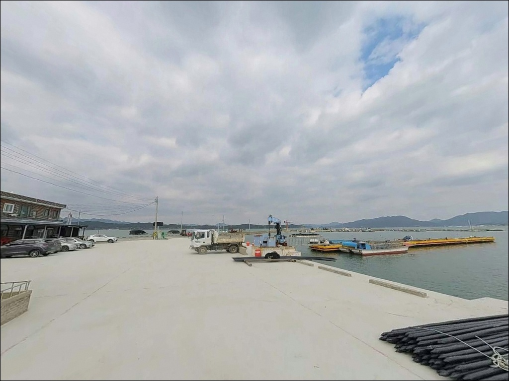
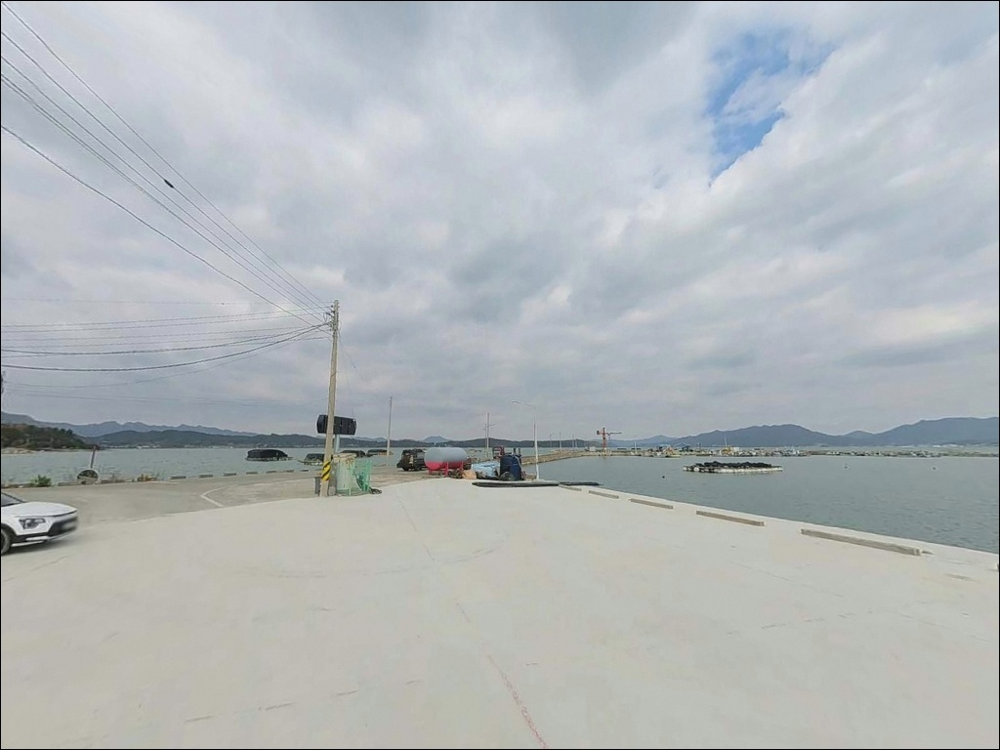
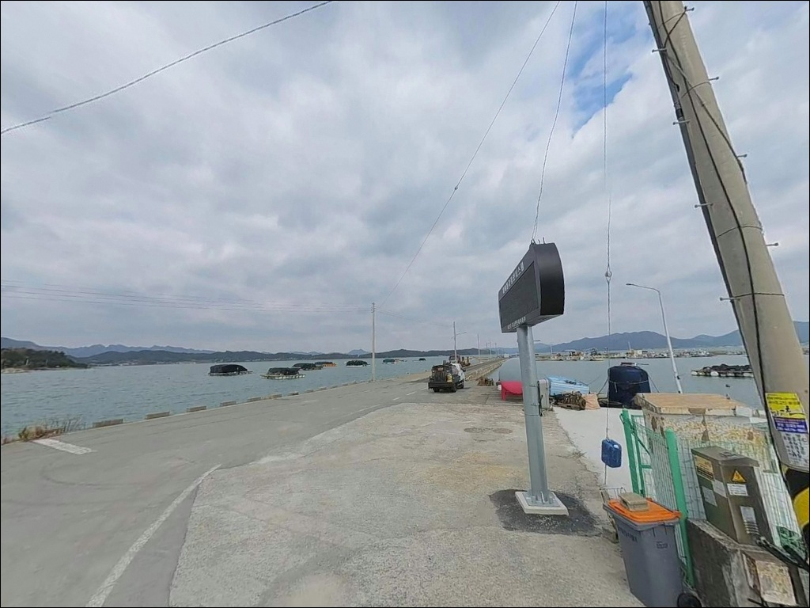
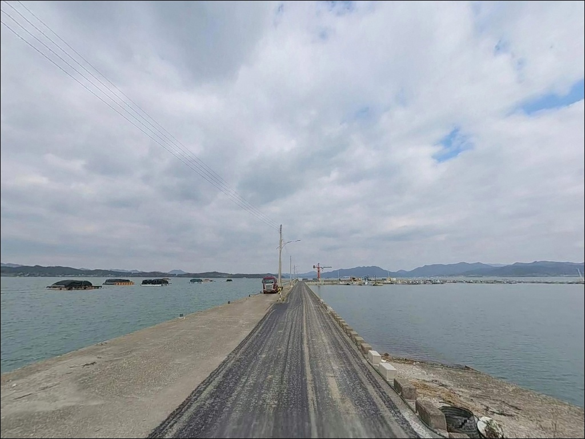
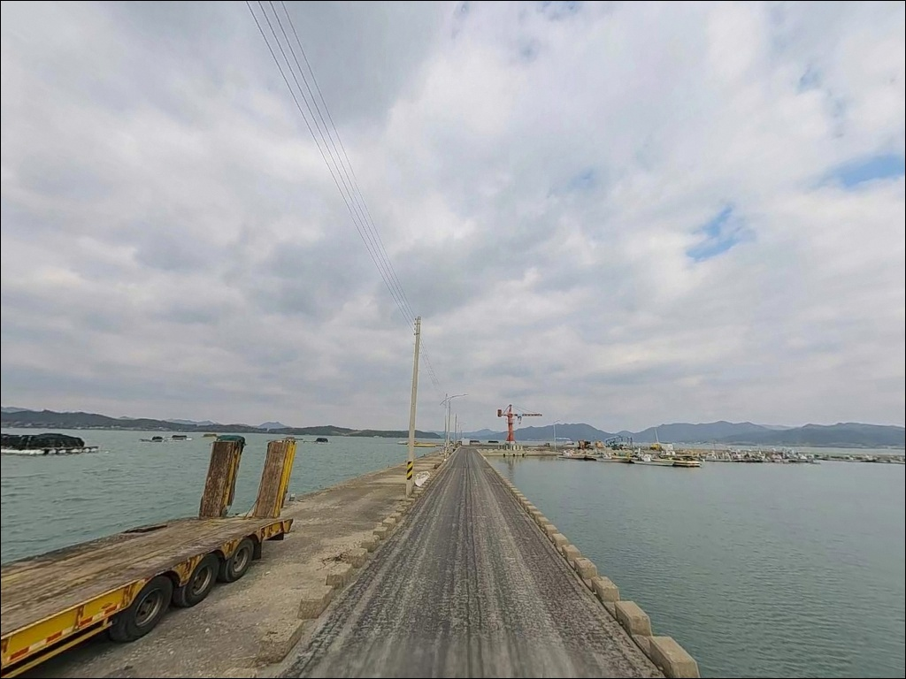
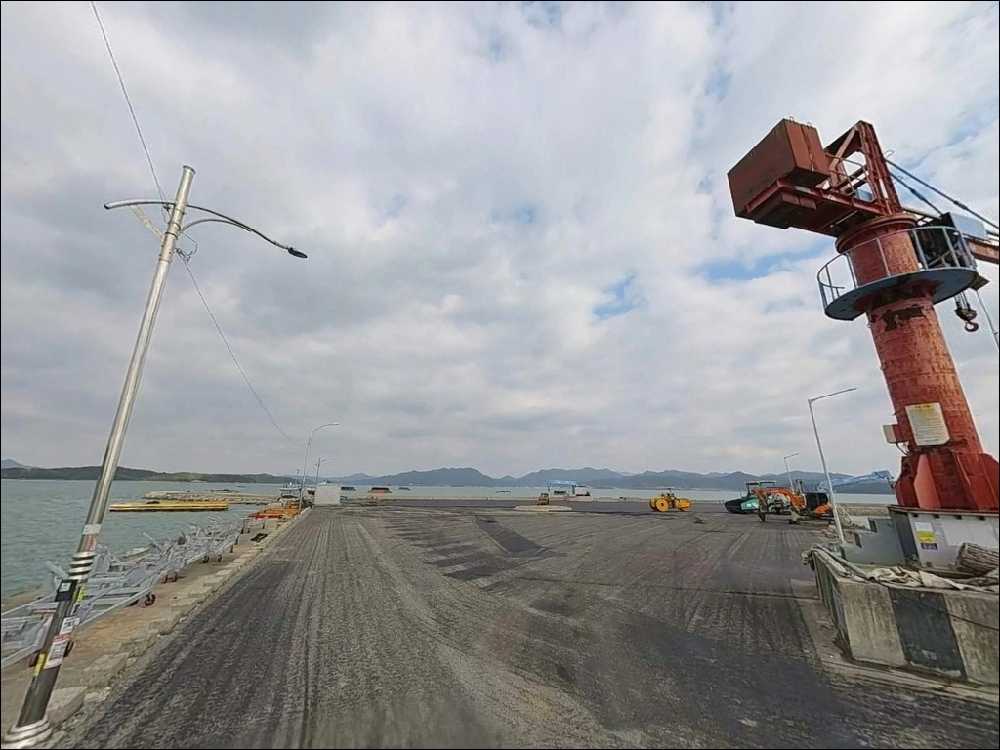
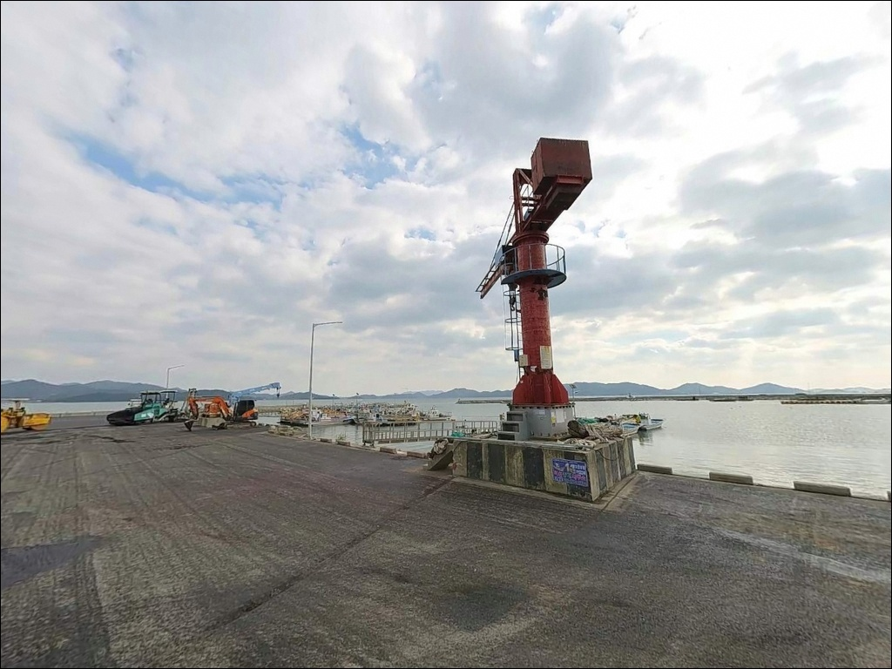
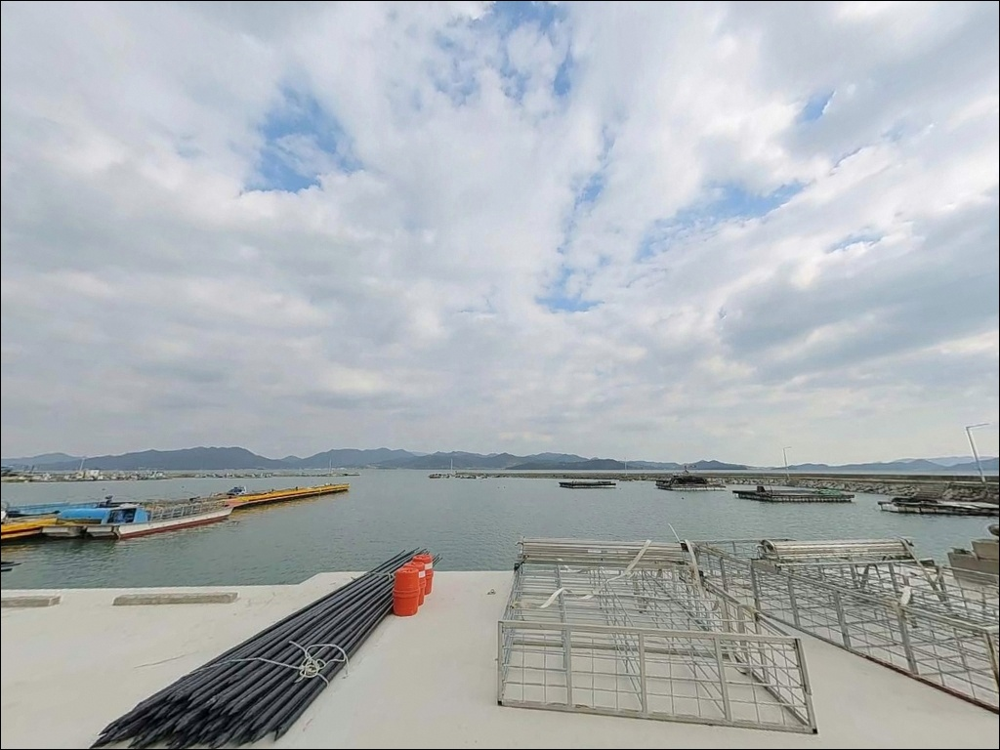

이 페이지에는 광고(제휴 링크 포함)가 있으며, 광고 링크를 통해 구매하면 운영자가 판매 수익 또는 수수료를 받을 수 있습니다. 포인트 사진: 카카오맵 스카이뷰·로드뷰. 이 페이지의 지도·사진 이미지는 카카오맵의 실제 서비스 이미지와 다를 수 있습니다.

사초항
전남 강진군 신전면 사초리 1-17
물때 확인 없이 강진만 안쪽 포인트를 찾으면
간조 시간대에 바닥이 드러나
어떤 채비를 써도 운용 자체가 불가능해집니다.
사초항은 갯벌 지형 위에 자리한 내만형 어항으로,
만조 타이밍이 낚시 성패를 가르는 구조입니다.
전남 강진군 신전면 사초리에 위치한 사초항은
강진만 동측 해안에 자리하며
방파제 총연장 591m, 물양장 225m를 갖춘
지방어항입니다.
강진만 특유의 내만 구조 덕분에
외해 파도 영향이 적고,
갯벌과 수로가 함께 형성된 지형은
원투낚시와 루어낚시 모두에 대응 가능한 조건을
갖추고 있습니다.
이 글은 사초항의 진입 여건,
차박 환경, 물때 기준, 낚시 방식 적합성에 집중합니다.
조황 단정이나 특정 어종 보장은
이 글의 범위에 포함되지 않습니다.

사초항까지 이어지는 진입로는
왕복 2차선 포장도로로 연결되어 있습니다.
신전면 소재지에서 남쪽 해안선을 따라
내려오는 구조라 도로 폭이 안정적이며,
대형 SUV나 캠핑 장비를 갖춘 차량도
무리 없이 진입할 수 있는 수준입니다.
항구 내부는 물양장 앞 광장과
방파제 기부측 공터가 주차 1순위 후보입니다.
사초마을 해변공원 인근 도로변도
넓은 공간이 확보되어 있어
모든 차종의 회차와 주차가 자유로운 편입니다.
항 내 수협 출장소와 어판장이 자리하고 있어
어선 동선과 작업 공간을 피해 자리를 잡는 것이
기본 매너입니다.
사초항은 마을과 항구가 붙어 있는
생활 어항 구조입니다.
외딴 포인트가 아니라 주민 왕래가 상시 존재하는
환경임을 염두에 두고 진입하는 편이 좋습니다.

사초항은 수협 출장소와 어판장이 있는
생활 어항 구조라
야간에도 항 주변에 가로등이 설치되어 있습니다.
완전 암흑 환경이 아니어서
야간 낚시 접근이 가능한 밝기는 확보됩니다.
다만 민가가 항 바로 뒤편에 밀집해 있어
프라이버시는 제한적입니다.
차박 관점에서는 사초항 바로 앞보다
인근 해변공원 주변 도로변 공간이
차량 배치와 체류 동선이 더 여유롭습니다.
해변공원은 지역 축제가 열릴 만큼
광장 구조가 갖춰진 공간으로,
1박 차내 취침 용도로 접근하기에
사초항 주변에서 가장 현실적인 선택지입니다.
강진만 내만 특성상 외해 파도 노출이 적고
바람의 영향도 상대적으로 완화되는 편입니다.
기상 악화 시에도 잔물결 수준을 유지하는 경우가 많아
날씨 변화에 따른 차박 여건의 급변 가능성은
낮은 편입니다.

사초마을에는 수협 출장소와 어판장이 운영됩니다.
어판장에서 제철 수산물을 구매할 수 있으며,
마을 내 소규모 슈퍼도 자리합니다.
신전면 소재지 방향으로
3km 안쪽에 편의점과 기본 생활 인프라가
형성되어 있습니다.
응급 대응이나 대형 생활 물품이 필요하다면
강진읍내까지 이동해야 합니다.
약 10km권에 농협 하나로마트, 병원, 주유소 등
전반적인 인프라를 이용할 수 있습니다.
낚시용품이 필요하다면
마량항 방면으로 이동하는 동선이 효율적입니다.
마량항 인근에 횟집과 낚시 관련 상점이
밀집되어 있습니다.
화장실은 사초수산물 위판장 인근에
공중화장실이 위치하는 것으로 확인됩니다.
출조 전 해변공원 주변 시설 위치도
함께 확인해 두는 편이 좋습니다.

사초항 방문에서 가장 먼저 결정해야 할 것은
물때입니다.
강진만은 갯벌이 두껍게 형성된 내만 해역으로,
간조 시에는 바닥이 상당 부분 드러납니다.
방파제 끝단에서 물골 방향으로
수심 3~5m가 확보되는 시간대는
만조 전후 2시간 구간으로 좁혀집니다.
바다타임에서 강진군 기준 물때를 확인하고
출발 시각을 이 구간에 맞추는 것이
기본 전략입니다.
강진만 수로 구간에서는 조류가 빠른 편입니다.
마량항과 고금도 사이 수로에서
창조류 기준 4노트 안팎의 흐름이 형성되며,
이 조류는 사초항이 위치한 만 내부 순환에도
영향을 줍니다.
조류가 강한 시간대에는 봉돌 무게를 올려
채비가 떠내려가지 않도록 대응하는 것이
현장 기본 원칙입니다.
갯벌 구간에서는 밀물이 빠르게 차오르는 경우가 있습니다.
방파제 위로 물이 넘칠 수 있는 만조 시간대에는
발판 위치를 미리 파악해 두는 편이 안전합니다.
야간에는 헤드랜턴과 구명조끼를
반드시 착용합니다.

사초항이 위치한 강진만 동측 해안은
내만 깊숙이 들어선 구조로
파도보다는 조류 흐름이 낚시 조건을
결정하는 지형입니다.
방파제 591m가 외해 방향으로 길게 뻗어 있으며,
방파제 끝단과 항 입구 수로 경계 구간에서
수심이 급격히 깊어지는 브레이크라인이 형성됩니다.
내항 쪽은 수면이 잔잔하고 수심이 완만해
선착장 가장자리와 정박선 사이에서
생활낚시에 가까운 가벼운 채비 운용이 가능합니다.
외항 방파제 끝단은 조류가 통과하는 길목으로,
원투채비를 멀리 보내
물골 방향을 공략하는 방식이
이 포인트의 핵심 전략입니다.
사초 일대는 개불과 낙지가 풍부한 갯벌 지형으로
저서생물 밀도가 높습니다.
갯벌과 수로가 만나는 경계선이
바닥 어종의 먹이 활동 구간이 되는 구조로,
원투채비의 착지점은
갯벌 끝 수로 경계를 기준으로
잡는 것이 유효합니다.
출조 전 사초항 일대 또는 강진만 조황을
검색해 최신 현장 정보를 한 번 더 확인하시기 바랍니다.

사초항에서 가장 기본적으로 어울리는 방식은
원투낚시입니다.
강진만 갯벌 특성의 평탄한 모래·니질 혼합 저질에서
도다리, 붕장어, 망둥어를 노리는 조건이 갖춰져 있습니다.
참갯지렁이 또는 청갯지렁이를 미끼로 사용해
물골 수로 방향으로 장거리 캐스팅하는 방식이
이 포인트 지형에 맞습니다.
릴찌낚시도 외항 방파제 끝단에서 유효한 스타일입니다.
강진만 일대는 감성돔과 숭어가
사계절 주요 대상어종으로 거론됩니다.
특히 가을철 감성돔과 여름 숭어 시즌에
방파제 끝단 테트라포트 주변을
집중적으로 탐색할 수 있는 구간이
릴찌낚시 자리로 적합한 조건을 갖추고 있습니다.
루어낚시로는 수로를 따라 조류가 흐르는 구간에서
농어와 볼락을 노릴 수 있습니다.
소형 미노우나 지그헤드 리그를 활용한
슬로우 리트리브 위주의 탐색이
이 지형의 흐름 특성에 잘 맞습니다.
항 내측의 잔잔한 수면 구간에서는
가을 전어와 숭어 시즌에
카고 채비나 가벼운 찌낚시도
접근 가능한 방식입니다.

사초항 조류가 지나치게 강하거나
물때 타이밍을 맞추기 어려울 때는
마량항 방파제가 1순위 대안입니다.
강진만 입구 쪽에 자리해
외해 조류 영향을 상대적으로 더 받는 구조로,
릴찌낚시와 에깅이 활발하게 이루어지는
강진군 대표 어항입니다.
마량항은 사초항에서 차량으로 20분 안팎 거리이며,
낚시용품점, 횟집 20여 곳, 수협 위판장 등
인프라가 밀집되어 있습니다.
사초항을 처음 방문하는 경우라면
마량항을 기점으로 잡고
사초항을 보조 탐색지로 병행하는 동선이
효율적입니다.
강진만 내부 대안으로는
가우도 낚시공원도 있습니다.
사초항에서 5~8km 거리로,
출렁다리로 도보 접근이 가능한 섬에
낚시공원이 정식 조성되어 있습니다.
감성돔, 숭어, 농어 낚시가 이루어지는 곳으로
강진만 동일 해역 패턴에서
다른 지형 조건을 탐색하고 싶을 때
방문하기 좋은 대안 포인트입니다.

원투낚시로 바닥 어종을 노리거나
방파제 끝단에서 릴찌낚시를 즐기는 낚시인이라면
사초항의 지형 조건은 잘 맞는 편입니다.
591m 방파제와 물골이 만드는 구조는
복수 방식을 하루 동선 안에 배치하기에
충분한 공간을 갖추고 있습니다.
단, 물때 계산 없이 간조 시간대에 도착하면
갯벌만 확인하고 돌아오는 상황이 될 수 있습니다.
만조 전후 타이밍 판단과
현장 채비 운용 기준이
이 포인트를 제대로 활용하는 조건입니다.
물때 확인, 자급 준비, 어선 동선 배려,
이 세 가지를 갖추고 진입한다면
강진만 내만의 조용한 어항에서
낚시와 하룻밤 차박을 동시에 즐길 수 있는
출조가 됩니다.